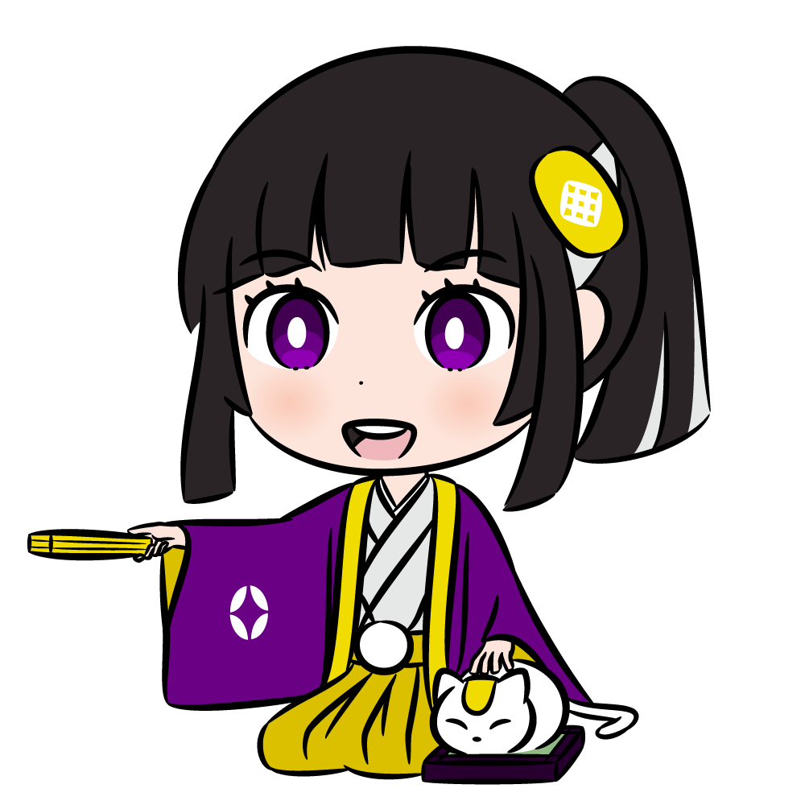

c0ban代官ちゃんは、暗号通貨c0banのtwitter投銭botです。

使い方コマンド |
|
- 投銭
@tipc0ban tip @受取り先 数量
- ばらまき
@tipc0ban バラマキ 数量（総額）
※c0ban代官ちゃんをフォローしてる残高１RYO以上のアカウントが対象
- 入金アドレスの確認
@tipc0ban deposit
- 残高の確認
@tipc0ban balance
- 一部出金
@tipc0ban withdraw 数量 自分のアドレス
- 全額出金
@tipc0ban withdraw all 自分のアドレス
|
|
【注】コマンドと次のコマンドの間は、必ず半角スペースを入れるのじゃ！！
使い方例
①自分のTwitterアカウントの残高を確認する
@tipc0ban balance
これで自分のアカウントのc0banのもってる数量が確認できる
同じコマンドは連続でツイート出来ないため、
@tipc0ban balance 残高教えて-!
などコマンドのあとの文字を工夫する
②自分のアカウントにc0banを入金する
@tipc0ban deposit
そうすると入金アドレスをc0ban代官ちゃんが教えてくれるので、そのアドレスにｃ０banを送る
16承認(約１０分)されると自分の残高に反映される。
③入金が完了したか確認する
①のやり方でbalanceコマンドで確認する。
④早速、誰かに投げてみる！
@tipc0ban tip @送りたい人のtwitterID 送りたいc0banの数量
(例)@tipc0ban tip @c0banProject 1
こうすると自分から@c0banProjectに１RYO送れる
⑤自分が投銭などでtwitterで受け取ったc0banを外のアドレスに出す
一部出金
@tipc0ban withdraw 数量 自分のアドレス
全額出金
@tipc0ban withdraw all 自分のアドレス
使用上の注意事項
- リアルタイム応答ではないため、悪代官ちゃんが反応するまでにタイムラグがあります。
- 入金確認は約10分ほどかかります。
- 鍵アカウントは各種コマンドが使えません。ご使用の際は鍵を外してツイートしてください。
- 出金時、手数料として0.0002 RYOかかります。
- 本サービスによって被った損害・損失について、c0banProjectでは一切の責任を負いかねますのでご了承ください。
- 本サービスをwalletとして利用することは避けてください。万が一GOXしてもよいc0banをいれて遊んでください。
開発＆アイコンイラスト：すなぎもさん（@anipopina）
ヘッダー画像:ヨッシャ‼さん（@yoshino_alice2）
運営：c0banProject（@c0banProject）